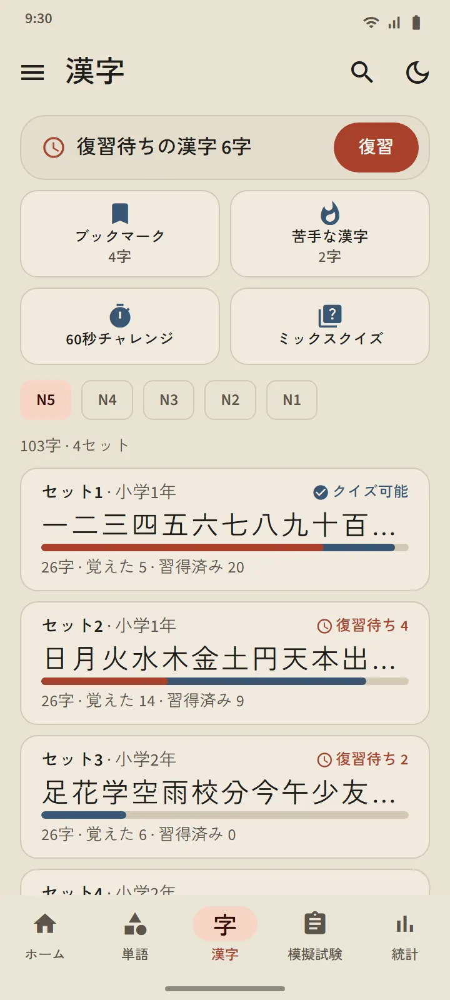
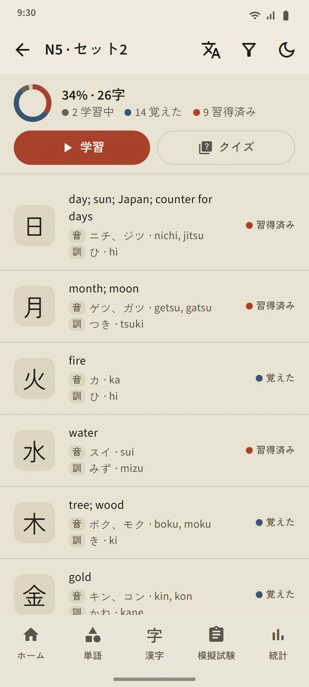
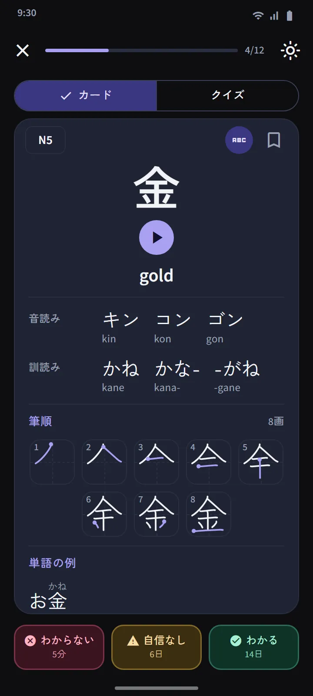
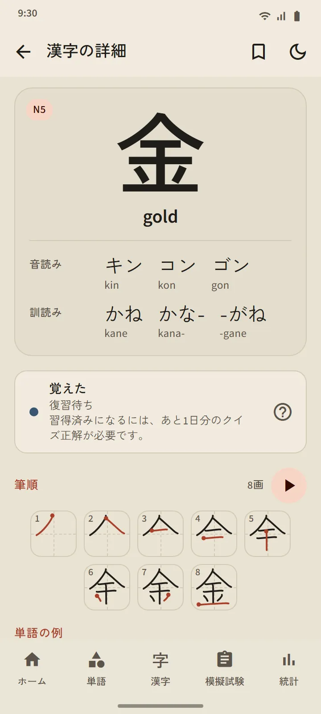
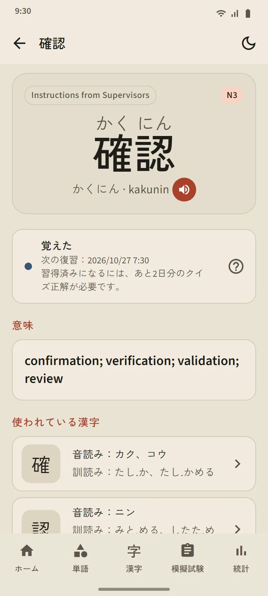
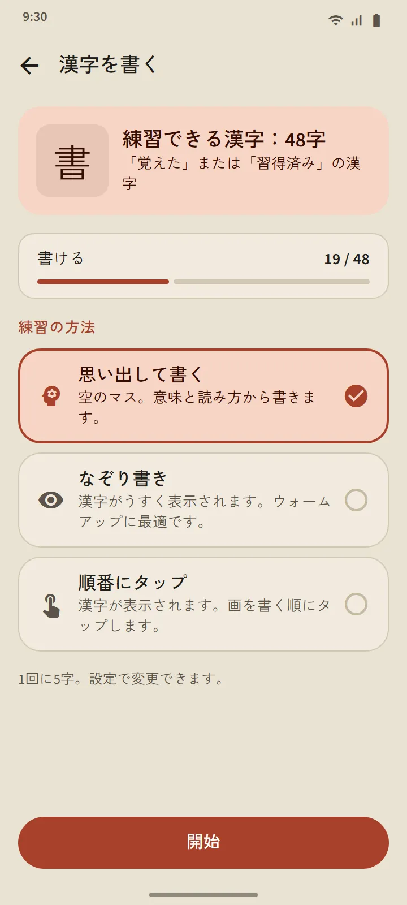
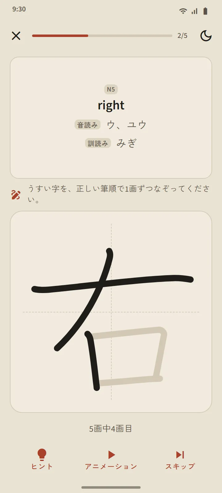

日本の学校の順番で 25 字ずつのセット
漢字タブは JLPT のレベルごとに、さらに約 25 字ずつのセットに分かれています。レベル内の順番は日本の学校の学年（1 年生から）にしたがい、次に画数の少ない順です。数字、曜日、季節のようにまとまっているものは順番どおりに並べています。各セットの行には、漢字、進み具合のバー、覚えた数と習得済みの数、「クイズ可能」の表示か復習待ちの数が表示されます。
| レベル | 漢字 | 利用 |
|---|---|---|
| N5 | 103 | 無料 |
| N4 | 181 | 無料 |
| N3 | 370 | プレミアム |
| N2 | 369 | プレミアム |
| N1 | 1,207 | プレミアム |


漢字カードとクイズ
カードの表は漢字だけです。裏には、意味、音読みと訓読み（必要ならローマ字も）、一画ごとに一コマで書き始めの位置を示した筆順の図、その漢字を使った例語があります。単語カードと同じ 3 つのボタンで、次の復習時期が決まります。
セットのクイズは、漢字 10 字が覚えたか習得済みになると始められ、問題は漢字から意味、意味から漢字、漢字から読みの 3 種類です。習得済みのルールも同じで、別々の 3 日にクイズで正解する必要があります。タブの上にある漢字の復習は全セットから復習待ちの漢字を集め、ミックスクイズはセットをまたいでテストします。

漢字の詳細と特別なデッキ
漢字ごとの詳細ページには、意味、段階と次の復習、読み、筆順の図、例語があり、単語の詳細ページからは構成する漢字に移れます。単語と同じように、漢字にもブックマーク、苦手な漢字、60秒チャレンジのデッキがあり、ホーム画面のクイック練習のスイッチで、4 つのタイルを漢字版に切り替えられます。


指で漢字を書く
覚えた、または習得済みの漢字は、書いて練習できます。表示されるのは意味と読みだけで、一画ずつ書くと、画ごとに形、向き、書き順をオフラインでチェックします。モードは思い出して書く、なぞり書き、順番にタップの 3 つです。別々の 2 日に、何も見ずに助けなしで書けると、その漢字は「書ける」になります。


漢字入門
覚え始める前に漢字のしくみを知る、11 の短いレッスン：音読みと訓読みとその使い分け、送りがな、っ や連濁などの音の変化、単語ごと覚える読み、部首、筆順。ホーム画面の「日本語の基礎」コーナーから開け、無料です。
データの出典
意味と読みは KANJIDIC（Electronic Dictionary Research and Development Group）、筆順は KanjiVG によるもので、どちらも CC BY-SA ライセンスです。漢字のレベルは旧 JLPT のリストにもとづく目安です。現在の JLPT は公式の漢字リストを公開していません。